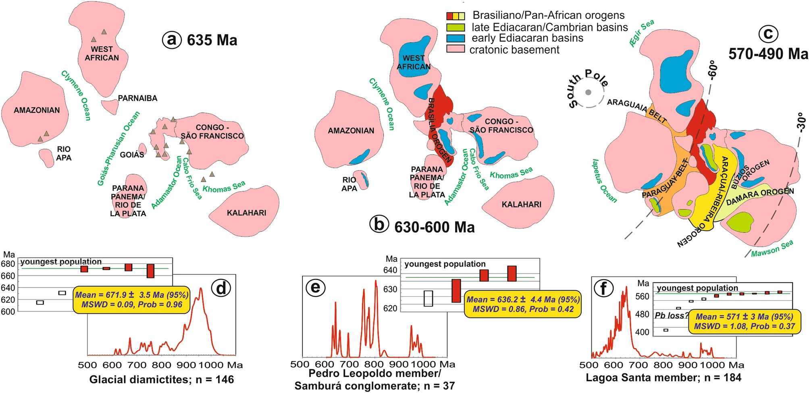

Goldilocks at the dawn of complex life: mountains might have damaged Ediacaran-Cambrian ecosystems and prompted na Early Cambrian greenhouse world

Resumo em Português
Combinando datação U-Pb in situ em carbonatos com condicionantes elementais e isotópicos, calibramos a sinergia da evolução integrada montanha-bacia no Gondwana Ocidental. Demonstramos que a deposição do Grupo Bambuí coincide com o fechamento dos oceanos Goiás-Pharusiano (630–600 Ma) e Adamastor (585–530 Ma). Os metazoários prosperaram por um breve momento de condições balanceadas de redox e nutrientes. Esse intervalo foi seguido, no entanto, pelo fechamento do oceano de Clymene (540–500 Ma), que gradualmente isolou a bacia do acesso ao mar aberto. Isso impediu a renovação da água do mar e levou ao aporte descontrolado de nutrientes, ao rebaixamento da redoxclina e a incursões anóxicas, alimentando retroalimentações positivas de produtividade e impedindo o desenvolvimento de ecossistemas típicos do Ediacarano-Cambriano.Assim, as montanhas fornecem as condições — como oxigênio e nutrientes — mas também podem inviabilizar o desenvolvimento da vida se as bacias tornam-se excessivamente restritas, caracterizando um efeito Cachinhos Dourados ou de nível ótimo. Durante a transição em leque do Neoproterozoico tardio-Cambriano de Rodínia para o Gondwana, as bacias marginais recém-formadas de Laurentia, Báltica e Sibéria permaneceram abertas ao mar global, enquanto as bacias intracontinentais do Gondwana tornaram-se progressivamente isoladas. A extensão na qual a restrição de bacias pode ter afetado o ciclo global do carbono e o clima — por exemplo, por meio do aporte de gases como metano que poderiam ter contribuído para um mundo estufa no início do Cambriano — necessita ser considerada em estudos futuros.